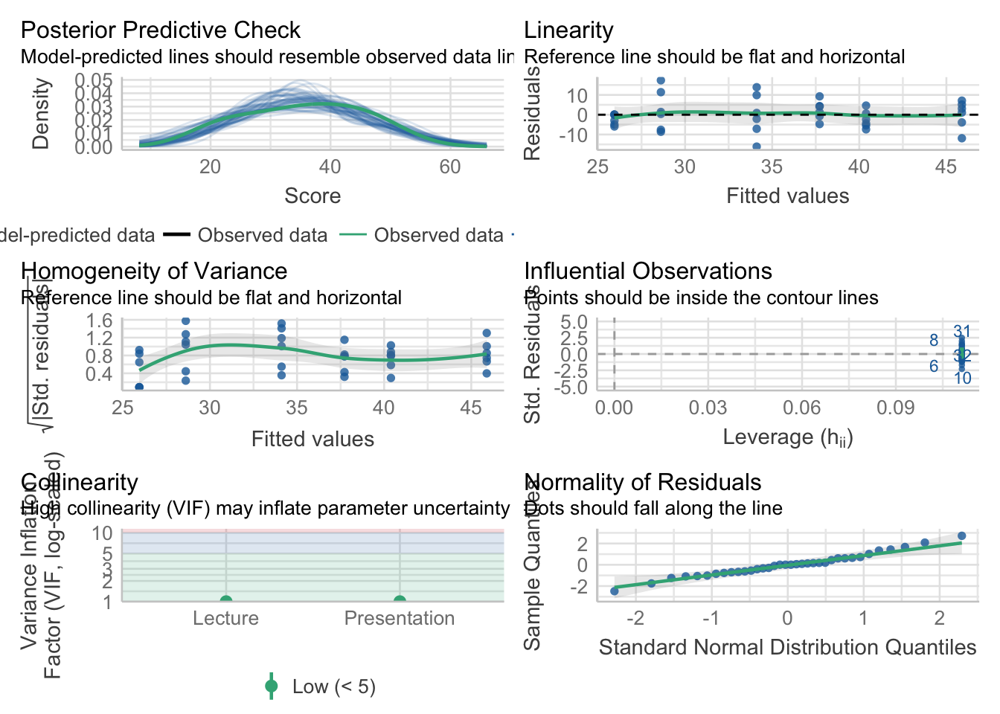
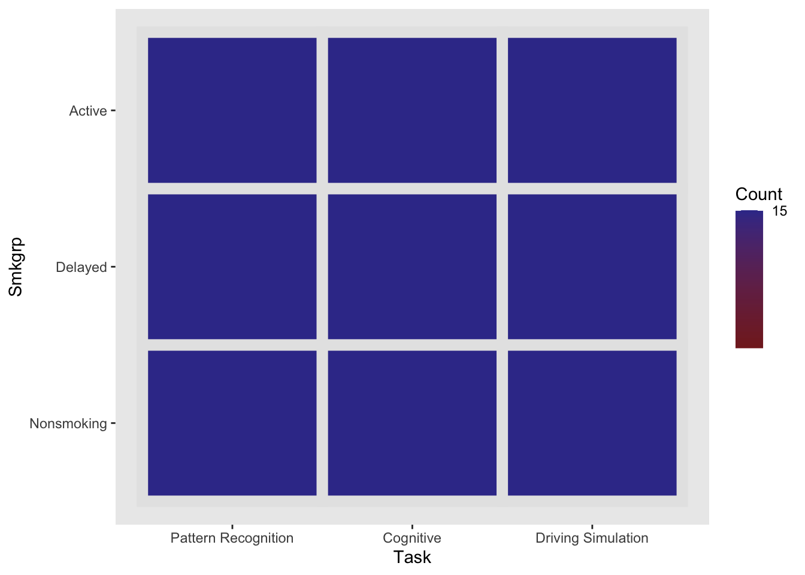
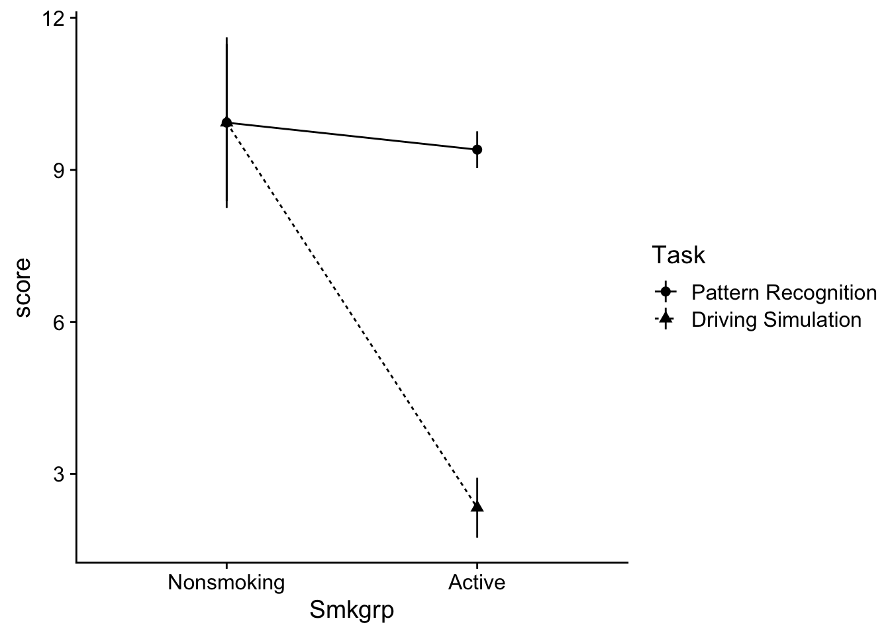
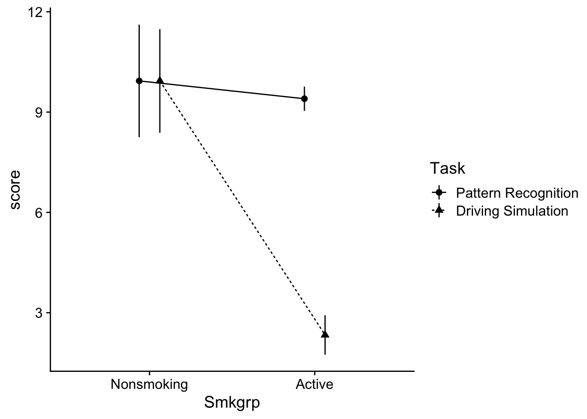
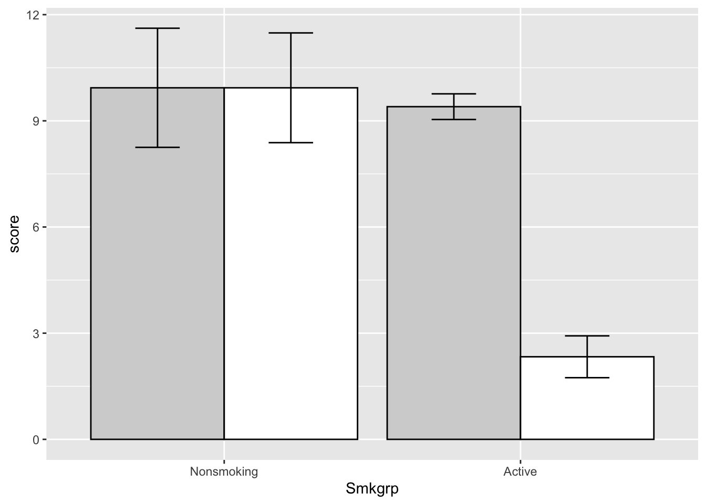
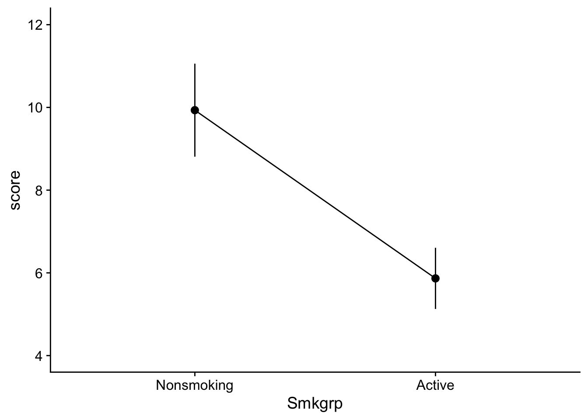
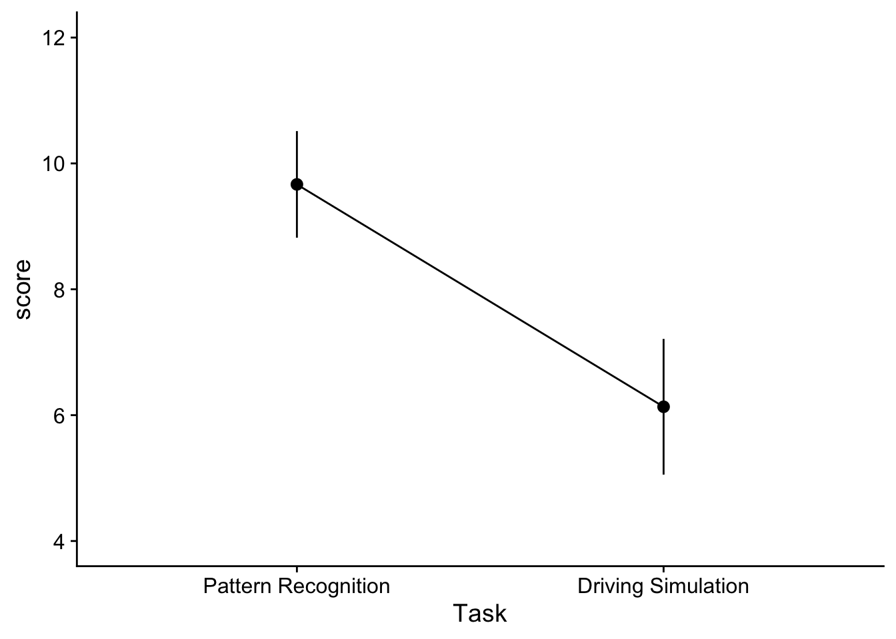
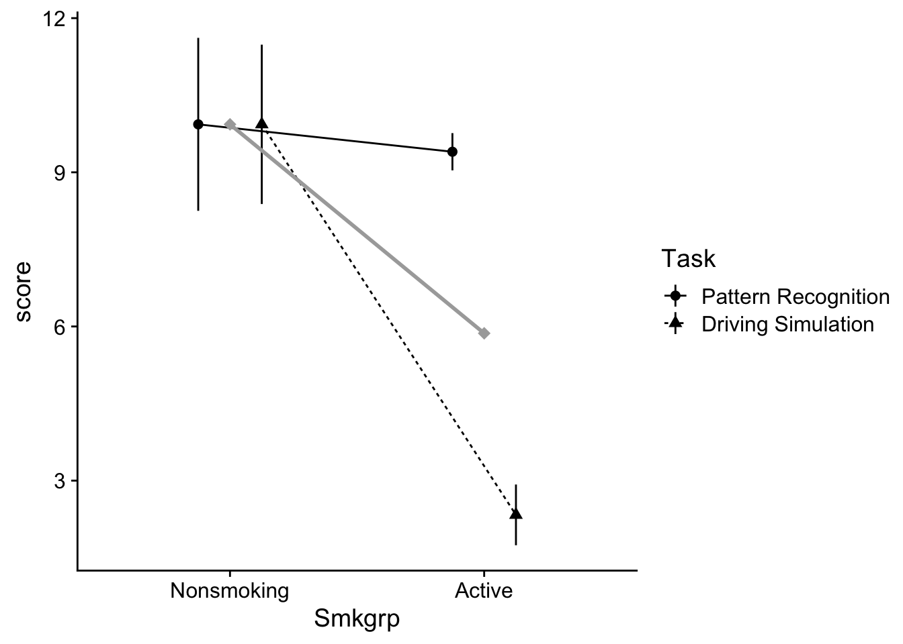
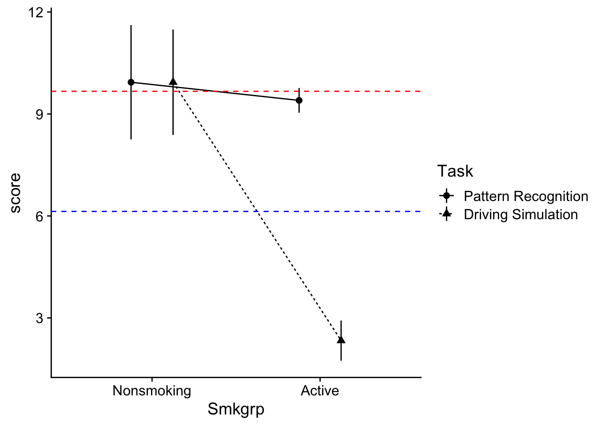

Factorial ANOVA - The omnibus ANOVA and Main effects
Note that this week’s vignette assumes you have the following packages:
TLDR;
To run a factorial ANOVA we can use the lm() method we are familiar with. In this walkthrough we only focus on what can be done with the omnibus ANOVA assuming no interactions:
The general steps for running a factorial ANOVA:
- construct your ANOVA model using
lm - use the residuals of the model to test for normality and heteroscadicity
- test the model, checking for the presence of an interaction, and any main effects.
- If no interaction proceed with any necessary post hoc analyses on the main effects.
This week we will be focusing on Steps 1, 2, and 4, i.e., we won’t be formally looking at potential interaction effects. However, as we will see next week, analyzing and interpreting interaction effects is a critical part of factorial ANOVA.
For now, I want you focused on building intuitions about dealing with main effects.
Example
# Preliminaries
## load in data
dataset <- read_csv("https://raw.githubusercontent.com/tehrandavis/graduate_statistics/main/practice_datasets/factorial_ANOVA_dataset_no_interactions.csv")Rows: 36 Columns: 4
── Column specification ────────────────────────────────────────────────────────
Delimiter: ","
chr (2): Lecture, Presentation
dbl (2): Score, PartID
ℹ Use `spec()` to retrieve the full column specification for this data.
ℹ Specify the column types or set `show_col_types = FALSE` to quiet this message.## in this case, fixing IV columns...
dataset$Lecture <- recode_factor(dataset$Lecture, "1"="Phys","2"="Soc","3"="Hist")
dataset$Presentation <- recode_factor(dataset$Presentation, "1"="Comp","2"="Stand")
# Step 1: create the additive ANOVA model
# note that this is not a full factorial model, but what we are focusing on this week:
aov_model <- lm(Score~Lecture + Presentation,data = dataset)
# Step 2a: test normalty / heteroscadicity using model visually, best to run from your console:
performance::check_model(aov_model)
# Step 2b: check normality and homogeneity assumptions using tests:
# test residuals of model for normality:
aov_model %>% resid() %>% shapiro.test()
Shapiro-Wilk normality test
data: .
W = 0.98464, p-value = 0.8873# test homogeneity:
# note we are using a test from the performance package due to (somewhat) artificial limitations of the instruction method (see below)
aov_model %>% performance::check_homogeneity()Warning: Variances differ between groups (Bartlett Test, p = 0.040).# Step 3: check the F-ratio for significance
# note I'm only slecting columns from the anova table that are relevant to us:
aov_model %>% sjstats::anova_stats() %>%
dplyr::select(c("term","df","statistic","p.value","partial.etasq"))term | df | statistic | p.value | partial.etasq
-------------------------------------------------------
Lecture | 2 | 3.779 | 0.034 | 0.191
Presentation | 1 | 22.670 | < .001 | 0.415
Residuals | 32 | | | # Step 4: Post hoc analyses on main effects
emmeans(aov_model, specs = pairwise~Lecture, adjust="tukey")$emmeans
Lecture emmean SE df lower.CL upper.CL
Phys 40.0 2.14 32 35.6 44.4
Soc 31.8 2.14 32 27.5 36.2
Hist 34.5 2.14 32 30.1 38.9
Results are averaged over the levels of: Presentation
Confidence level used: 0.95
$contrasts
contrast estimate SE df t.ratio p.value
Phys - Soc 8.17 3.03 32 2.696 0.0291
Phys - Hist 5.50 3.03 32 1.815 0.1807
Soc - Hist -2.67 3.03 32 -0.880 0.6565
Results are averaged over the levels of: Presentation
P value adjustment: tukey method for comparing a family of 3 estimates $emmeans
Presentation emmean SE df lower.CL upper.CL
Comp 41.3 1.75 32 37.8 44.9
Stand 29.6 1.75 32 26.0 33.1
Results are averaged over the levels of: Lecture
Confidence level used: 0.95
$contrasts
contrast estimate SE df t.ratio p.value
Comp - Stand 11.8 2.47 32 4.761 <.0001
Results are averaged over the levels of: Lecture Analysis of Variance: Factorial ANOVA
In this week’s vignette we are simply building upon the previous two weeks coverage of One-way ANOVA and multiple comparisons. I’m assuming you’ve taken a look at all of the assigned material related to these topics. This week we up the ante by introducing more complex ANOVA models, aka factorial design. As we discussed in class, a factorial ANOVA design is required (well, for the purposes of this course) when your experimental design has more than one IV. Our examples this week focus on situations involving two IVs, however, what is said here applies for more complex designs involving 3, 4, 5, or however many IV’s you want to consider. Well, maybe not however many… as we we’ll see this week and the next, the more IVs you include in your analysis, the more difficult interpreting your results becomes. This is especially true if you have interaction effects running all over the place. But perhaps I’m getting a little bit ahead of myself. Let’s just way I wouldn’t recommend including more than 3 or 4 IVs in your ANOVA at a single time and for now leave it at that.
Main effect, main effect, and interactions… oh my!
When we are performing a factorial ANOVA we are performing a series of independent comparisons of means as a function of our IVs (this assumption of independence is one of the reasons that we don’t typically concern ourselves with adjusting our p-values in the omnibus factorial ANOVA). For any given number of IVs, or factors, we test for a main effect of that factor on the data—that is “do means grouped by levels within that factor differ from one another not taking into consideration the influence of any of the other IVs”. Our tests for interactions do consider the possibility that our factors influence one another—that is,”do the differences that are observed in one factor depend on the intersecting level of another?”
For the sake of simplicity, we will start with a 2 × 2 ANOVA and work our way up by extending the data set. Given our naming conventions, saying that we have a 2 × 2 ANOVA indicates that there are 2 IVs and each has 2 levels. A 2 × 3 ANOVA indicates that there are 2 IVs, and that the first IV has 2 levels and the second has 3 levels; a 2 × 3 × 4 ANOVA indicates that we have 3 IVs, the first has 2 levels, the second has 3 levels, and the third has 4 levels.
Our example ANOVA comes from a study testing the effects of smoking on performance in different types of putatively (perhaps I’m showing my theoretical biases here) information processing tasks.
There were 3 types of cognitive tasks:
1 = a pattern recognition task where participants had to locate a target on a screen;
2 = a cognitive task where participants had to read a passage and recall bits of information from that passage later;
3 = participants performed a driving simulation.
Additionally, 3 groups of smokers were recruited
1 = those that were actively smoking prior to and during the experiment;
2 = those that were smokers, but did not smoke 3 hours prior to the experiment;
3 = non-smokers.
As this is a between design, each participants only completed one of the cognitive tasks.
Example 1: a 2×2 ANOVA
Let’s grab the data from from the web. Note that for now we are going to ignore the covar column.
dataset <- read_delim("https://www.uvm.edu/~statdhtx/methods8/DataFiles/Sec13-5.dat", "\t", escape_double = FALSE, trim_ws = TRUE)Rows: 135 Columns: 4
── Column specification ────────────────────────────────────────────────────────
Delimiter: "\t"
dbl (4): Task, Smkgrp, score, covar
ℹ Use `spec()` to retrieve the full column specification for this data.
ℹ Specify the column types or set `show_col_types = FALSE` to quiet this message.# A tibble: 135 × 4
Task Smkgrp score covar
<dbl> <dbl> <dbl> <dbl>
1 1 1 9 107
2 1 1 8 133
3 1 1 12 123
4 1 1 10 94
5 1 1 7 83
6 1 1 10 86
7 1 1 9 112
8 1 1 11 117
9 1 1 8 130
10 1 1 10 111
# ℹ 125 more rowsLooking at this data, the first think that we need to do is recode the factors. Recall that we can do this using recode_factor…
Ninja-up
As an alternative to mutate(), you can add a new column to a data frame by invoking dataframe$new_column. This saves us a bit of typing. Also, for weeks I’ve told you not to overwrite existing columns, and I maintain that is best practice for beginners. However, in this example we will overwrite.
To get a quick view of our data structure we can use two kinds of calls:
summary() provides us with info related to each column in the data frame. If a column contains a factor it provides frequency counts of each level. It the column is numeric it provides summary stats:
Task Smkgrp score covar
Pattern Recognition:45 Nonsmoking:45 Min. : 0.00 Min. : 64.0
Cognitive :45 Delayed :45 1st Qu.: 6.00 1st Qu.: 99.0
Driving Simulation :45 Active :45 Median :11.00 Median :111.0
Mean :18.26 Mean :112.5
3rd Qu.:26.00 3rd Qu.:128.0
Max. :75.00 Max. :191.0 In addition, I like to use the ezDesign() function from the ez package to get a feel for counts in each cell. This is useful for identifying conditions that may have missing data.
ez::ezDesign(data = dataset,
x=Task, # what do you want along the x-axis
y=Smkgrp, # what do you want along the y-axis
row = NULL, # are we doing any sub-divisions by row...
col = NULL) # or column
This provides us with a graphic representation of cell counts. In this case, every condition (cell) has 15 participants. As you can see right now this is a 3 x 3 ANOVA.
To start, let’s imagine that we are only comparing the active smokers to the nonsmokers, and that we are only concerned with the pattern recognition v driving simulation. In this circumstance we are running a 2 (smoking group: active v. passive) × 2 (task: pattern recognition v. driving simulation) ANOVA. We can do a quick subsetting of this data using the filter() command. For our sake, let’s create a new object with this data, dataset_2by2:
To get a quick impression of what this dataset looks like, we can use the summary() function, or ezDesign():
Task Smkgrp score covar
Pattern Recognition:30 Nonsmoking:30 Min. : 0.00 Min. : 64.00
Cognitive : 0 Delayed : 0 1st Qu.: 2.75 1st Qu.: 98.75
Driving Simulation :30 Active :30 Median : 8.00 Median :111.00
Mean : 7.90 Mean :110.73
3rd Qu.:11.00 3rd Qu.:123.00
Max. :22.00 Max. :168.00 ez::ezDesign(data = dataset_2by2,
x=Task, # what do you want along the x-axis
y=Smkgrp, # what do you want along the y-axis
row = NULL, # are we doing any sub-divisions by row...
col = NULL) # or column
You may notice from the summary above that the groups that were dropped “Delayed” smokers and “Cognitive” task still show up in the summary, albeit now with 0 instances (you’ll also notice that the remaining groups decreased in number, can you figure out why?). In most cases, R notices this an will automatically drop these factors in our subsequent analyses. However, if needed (i.e. it’s causing errors), these factors can be dropped by invoking the droplevels()function like so:
Task Smkgrp score covar
Pattern Recognition:30 Nonsmoking:30 Min. : 0.00 Min. : 64.00
Driving Simulation :30 Active :30 1st Qu.: 2.75 1st Qu.: 98.75
Median : 8.00 Median :111.00
Mean : 7.90 Mean :110.73
3rd Qu.:11.00 3rd Qu.:123.00
Max. :22.00 Max. :168.00 And to see the cell counts:
Making sense of plots
Let’s go ahead and plot the data using a line plot with 95% CI error bars. Note that these plots (up until the last section) are not APA-complete!!!!
Interaction plots
Interaction plots take into consideration the influence of each of the IVs on one another—in this case the mean and CI of each smoking group (Active v. Nonsmoking) as a function of Task (Driving Simulation v. Pattern Recognition). There is an additional consideration when plotting multiple predictors. That said, all we are doing is extending the plotting methods that you have been using for the past few weeks. The important addition here is the addition of group= in the first line the ggplot. For example:
indicates that we are:
using the
datasetdata setputting first IV,
Smkgrp, on the x-axisputting our dv,
scoreon the y-axisand grouping our data by our other IV,
Task
This last bit is important as it makes clear that the resulting mean plots should be of the cell means related to Smkgrp x Task
For example, a line plot might look like this. Note that I am assigning a different shape and linetype to each level of Task:
# line plot
ggplot(data = dataset_2by2, mapping=aes(x=Smkgrp,
y=score,
group=Task,
shape = Task)) +
stat_summary(geom="pointrange",
fun.data = "mean_se") +
stat_summary(geom = "line",
fun = "mean",
aes(linetype = Task)) +
theme_cowplot()
One thing you may have noticed is that is very difficult to distinguish between my Task groups at the Non-smoking level, the points and error bars are overlapping one another. One way to fix this is to use the position_dodge() function. This effectively shifts the data points to the left and right to separate them from one another. You need to perform an identical position_dodge() for each element you intend to shift. In this case, we need to include it in both the pointrange and line parts of our both.
Rewriting the above (while also getting rid of color per APA format)
# line plot with dodging
ggplot(data = dataset_2by2,
mapping=aes(x=Smkgrp,
y=score,
group=Task,
shape = Task)
) +
stat_summary(geom="pointrange",
fun.data = "mean_se",
position = position_dodge(0.25),
) +
stat_summary(geom = "line",
fun = "mean",
aes(linetype = Task),
position = position_dodge(0.25)
) +
theme_cowplot()
A brief inspection of the plot can be quite informative. Let’s start with the interaction, in fact: you should always start with the interaction. Since this is an “interaction” plot, often a quick visual inspection will allow us to predict whether our subsequent ANOVA will likely yield an interaction effect (it’s good practice to plot your data before running your ANOVA). A simple rule of thumb is that if you see the lines converging or intersecting then more than likely an interaction is present. However, whether it’s statistically significant is another question. You might think that this rule of thumb is useful if you use a line plot, and well, you’d be right. What about a bar plot, you ask? * Note that when generating a grouped barplot, you may need to position dodge to ensure your bars don’t overlap. Typically selecting a value of 0.9 ensures they do not overlap, but also that your grouped bars are touching one another with no gap between. For practice try changing the position_dodge values in the plot below to see how that effects the plot.
# barplot
ggplot(data = dataset_2by2, mapping=aes(x=Smkgrp,y=score,group=Task)) +
stat_summary(geom = "bar",
fun = "mean",
color="black",
aes(fill=Task),
position=position_dodge(.9)) +
stat_summary(geom="errorbar",
width=.3,
fun.data = "mean_se",
position = position_dodge(.9)) +
theme(legend.position="none") +
scale_fill_manual(values = c("light grey", "white"))
Note that the grey fills above are the “Driving Simulation” group and the white are the “Pattern Recognition”. Take a look at the means. If the relative difference between grouped means changes as you move from one category on the x-axis to the next, you likely have an interaction. Note that this is a general rule of thumb and applies to the line plots as well (the reason that the lines intersect is because of these sorts of changes). In this case, the bar (cell) means on the “Active” grouping are nearly identical, while the bar means in the “Nonsmoking” grouping are much further apart. So we likely have interaction.
Plotting main effects
If we wanted we could also create separate plots related to our mean effects. Remember that a main effect takes a look at the difference in means for one IV independent of the other IV(s). For example, consider Smkgrp, we are looking at the means of Nonsmoking and Active indifferent to Task. These plots would look something like this:
Smoke_main_effect_plot <- ggplot2::ggplot(data = dataset_2by2, mapping=aes(x=Smkgrp,y=score, group=1)) +
stat_summary(geom="pointrange",
fun.data = "mean_se",
position=position_dodge(0)) +
stat_summary(geom = "line",
fun = "mean",
position=position_dodge(0)) +
coord_cartesian(ylim=c(4,12)) +
theme_cowplot()
show(Smoke_main_effect_plot)
Task_main_effect_plot <- ggplot2::ggplot(data = dataset_2by2, mapping=aes(x=Task,y=score, group=1)) +
stat_summary(geom="pointrange",
fun.data = "mean_se",
position=position_dodge(0)) +
stat_summary(geom = "line",
fun = "mean",
position=position_dodge(0)) +
coord_cartesian(ylim=c(4,12)) +
theme_cowplot()
show(Task_main_effect_plot)
and would take a look at changes due to each IV without considering the other. Here we might infer that there is a main effect for both of our IVs.
That said, the original interaction plot is useful as well in assessing main effects as well. In this case, to infer whether there might be main effects we can imagine where the means would be if we collapsed our grouped plots (this is exactly what the main effects take a look at). To help with your imagination I’m going to plot our main effect means on the interaction plot. Here the grey-filled triangles represent the the collapsed Smoking Group means indifferent to task. To get these, just imagine finding the midpoint of the two circles in each level of Smoking group. The slope suggests the possibility a main effect.
Warning: Using `size` aesthetic for lines was deprecated in ggplot2 3.4.0.
ℹ Please use `linewidth` instead.
To imagine the collapsed Task means, we can just find the y-values that intersect with the midpoints of each line (note the red line is the mean value of the Driving Simulation group):

The difference in y-intercepts suggests the possibility of a main effect.
So in summary, I’m guessing from plot I’ve got 2 main effects and an interaction. For this week, we are only going to focus on the main effects. In the future, you’ll see that we would need to test for the interaction as well, and if it was present we would need to “deal” with that first.
For now, let’s focus on testing the main effects.
Running the ANOVA lm() method
Now we can run the using the lm() method as we have previously done with the One-way ANOVA. The new wrinkle is simply adding our additional IV terms to the the formula equation:
\[y=IV_1+IV_2+...+IV_n\]
where the first and second terms capture our main effects and the third is our interaction.
Using our data in R this formula becomes:
Assumption testing
visual inspection
Let’s quickly assess whether the prescribed model satisfies the assumptions for general linear models. Visually we may call upon the performance::check_model(). to get a series of visual inspection checks in a single plot. Note that you encounter errors in your .qmd, you may try to run this directly from your Console
Alternatively, running the above with panel = FALSE allows you to see each plot individually.
For our purposes this semester, the Homogeneity of Variance and Normality of Residuals plots are most important. Visual inspection suggests that while normality may not be and issue, there is potentially something awry with the homogeneity of variance.
test for assessing normality
If we want to check the normality of residuals we may use the Shapiro-Wilkes Test. We can call it directly using shapiro.test() or from the performance library. I show both methods below (you only need to choose ONE. In week’s past you’ve been using the shapiro.test():
Shapiro-Wilk normality test
data: .
W = 0.98464, p-value = 0.8873OK: residuals appear as normally distributed (p = 0.887).Keep in mind that the Shapiro-Wilkes test for normality is notoriously conservative. In week’s past we discussed an alternative based on this method from Kim (2013) “Statistical notes for clinical researchers: assessing normal distribution using skewness and kurtosis”:
# recommendation from Kim (2013)
source("https://raw.githubusercontent.com/tehrandavis/graduate_statistics/main/custom_functions/skew_kurtosis_z.R")
aov_model$residuals %>% skew_kurtosis_z() upr.ci crit_vals
skew_z 0.75 1.96
kurt_z -0.02 1.96Based on what you see what conclusions might you make?
test for assessing homogeneity of variance
Typically, we can submit our aov_model to car::leveneTest to test for homogeneity. However, for this week only, this will produce an error. This is because the car::leveneTest() demands that the IVs in a factorial ANOVA be crossed. That is, the Levene’s test requires that we include the interaction term in our model. This week, we are NOT looking at interactions, nor am I asking you to include the terms in our model. Because of this, we will us an alternate method, the Bartlet test while noting that in future weeks, and under most practical circumstances this will not be an issue. FWIW, the performance method works as a reliable alternative to car::leveneTest in most circumstances, so you could elect to just use this instead using method = "levene".
Warning: Variances differ between groups (Bartlett Test, p = 0.040).Our test says we have a violation (which is consistent with our visual inspection above. Let’s take a look at the 3x time rule. To do this we need to get a feel for the variance within each cell. While we are at it we might as well get the means too. Which leads to the next section (don’t worry we’ll come back to this)
Getting cell means and sd
Up until this point we’ve used psych::describeBy() to generate summary stats. This becomes a little more difficult as the designs become more complex. Alternatively you might elect to build a data table yourself. You learned how to do this a few weeks ago using the summarise function:
dataset_2by2 %>%
group_by(Task, Smkgrp) %>%
summarise(mean = mean(score), # get group means
var = var(score)) # get group variances`summarise()` has grouped output by 'Task'. You can override using the
`.groups` argument.# A tibble: 4 × 4
# Groups: Task [2]
Task Smkgrp mean var
<fct> <fct> <dbl> <dbl>
1 Pattern Recognition Nonsmoking 9.93 42.5
2 Pattern Recognition Active 9.4 1.97
3 Driving Simulation Nonsmoking 9.93 36.1
4 Driving Simulation Active 2.33 5.24Another alternative, that I would recommend over the psych package is to use summarySE() from the Rmisc package:
Rmisc::summarySE(data = dataset_2by2, # your dataset
measurevar = "score", # your dv
groupvars = c("Task","Smkgrp")) # your between-groups IV(s) Task Smkgrp N score sd se ci
1 Pattern Recognition Nonsmoking 15 9.933333 6.518837 1.6831565 3.6100117
2 Pattern Recognition Active 15 9.400000 1.404076 0.3625308 0.7775512
3 Driving Simulation Nonsmoking 15 9.933333 6.005553 1.5506271 3.3257644
4 Driving Simulation Active 15 2.333333 2.288689 0.5909368 1.2674335Recalling that we had an issue with heteroscadicity, we can now use the obtained sd values to assess whether our violation is too great. Let’s save our summary table:
from this we can call the sd values and square them to get our variance:
Houston we have a problem! The largest variance there is definitely greater than 3x the smallest. What to do? For now nothing, I don’t want you to go down that rabbit hole just yet. But look for info on dealing with this later.
getting marginal means for main effects
We can also use this function to report the means related to the main effects (irrespective of interaction).
For example, Smoking effect I can re-write the call above, simply dropping Task from groupvars:
Smkgrp N score sd se ci
1 Nonsmoking 30 9.933333 6.158444 1.1243730 2.299601
2 Active 30 5.866667 4.049124 0.7392655 1.511968and for the Task effect:
Task N score sd se ci
1 Pattern Recognition 30 9.666667 4.641145 0.8473533 1.733032
2 Driving Simulation 30 6.133333 5.905774 1.0782418 2.205252Note that If you are reporting means related to the main effects, you need to report these marginal means!
HOWEVER… this data has an interaction, and remember what I said above, if the data has an interaction, you need to deal with that first. We’ll show how to work with data that has interactions next week.
Testing the ANOVA
Ok. Now let’s look at our ANOVA table. Note that instead of the full print out, I’m asking sjstats to only give me the values I’m interested in: the term (effect), df, (F) statistic, p-value, and effect size, in this case partial.eta
term | df | statistic | p.value | partial.etasq
-------------------------------------------------------
Lecture | 2 | 3.779 | 0.034 | 0.191
Presentation | 1 | 22.670 | < .001 | 0.415
Residuals | 32 | | | You’ll note that both main effects are significant, meaning that we would need to perform pairwise, post-hoc comparisions for each effect. BUT you’ll also note that each of our factors ONLY HAD TWO LEVELS, meaning that the F-test in the ANOVA table IS a pairwise comparison. In cases like this, when the effect only has 2 levels, we are done (any post hoc analysis would be redundant).
Assuming you feel comfortable with everything in this walkthrough, let’s proceed to the next, which includes cases where our factors have three (or more) levels.